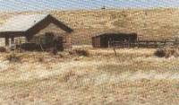
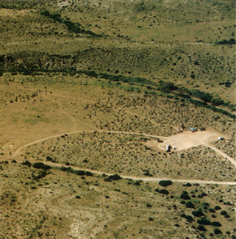

Roswell, à mon avis, est une impasse. C'est une erreur tactique majeure que de baser l'argumentaire
en faveur des ovnis uniquement sur un cas qui dispose de si peu d'éléments scientifiques et est entouré de tant de
témoignages si ambigus et contradictoires
Roswell est défendue par certains Bourdais, GildasStanton T. Friedman comme une icône de l'ufologie, quitte à en faire l'arbre qui
cache la forêt. Le grand public a assimilé le terme à la créature présentée par Pradel, sans comprendre qu'il
s'agissait du nom de la ville près de laquelle une mystérieuse épave fut
retrouvée écrasée.
Les événements
Déflagration
Le , au nord-ouest de Roswell
(Nouveau-Mexique), par temps orageux, le fermier William Ware Brazel, entend
une violente déflagration.
Découverte
Dès le lendemain, au petit matin du , il découvre sur ses terres un amas de débris
provenant d'un objet qu'il ne parvient pas à identifier. Après avoir récupéré quelques-uns des matériaux, Brazel
se rend chez ses voisins, Floyd et Loretta Proctor,
et leur fait part de sa découverte.
Signalement
Le , venant avec le projet d'acheter un nouveau pickup Jeep, Brazel
arrive dans son camion à Roswell (comté de Chaves), emportant avec lui des
échantillons de débris. Il commence par contacter le bureau météo de la ville, qui lui conseille de s'adresser
plutôt au sheriff du comté, George Wilcox.
Ensemble, ils appellent la base militaire de Roswell.
L'officier de renseignement de la base, Jesse A. Marcel, vient à peine de poser son
plateau au Club des officiers qu'on le prévient de l'appel. Au bout du fil, Wilcox, avec Brazel à ses côtés :
Il y a ici un homme, un fermier, qui est venu à la ville pour vendre ses laines. Il vient
juste de tondre son mouton, et il m'a dit quelque chose d'étrange et vous devriez être au courant de cela.
Eh bien, je suis tout ouïe.
Le nom de cet homme est Brazel. Il dit avoir trouvé quelque chose sur sa ferme qui s'est
écrasé, le jour d'avant ou quelques jours avant, et il ne sait pas ce que c'est. Il dit que cela pourraît bien
être intéressant que vous enquêtiez dessus. Je sais que vous êtes l'officier de renseignement de la base.
Bon, bien... où puis-je le rencontrer ?
Eh bien, il va partir d'ici ou , mais il est à mon
bureau en ce moment. Si vous voulez venir et lui parler maintenant, il sera là à vous attendre.
Frank Joyce appelle comme à son habitude le shériff en quête de nouvelles. Wilcox lui
parle de l'histoire Brazel qui est à côté de lui, et Joyce interroge Brazel par téléphone.
Marcel arrive et Brazel lui raconte tout. Marcel, considérant que l'avis de son colonel est nécessaire, propose à Brazel de l'accompagner à la base.
Brazel, qui a des choses à faire en ville, propose plutôt qu'ils se retrouvent dans 1 h. Un rendez-vous est
entendu au bureau de Wilcox.
De retour à Roswell AFB, Marcel parle de l'affaire au colonel William Hugh Blanchard, qui recommande de partir sur les lieux avec le personnel nécessaire.
Marcel repart avec le capitaine Sheridan Cavitt, du CIC. Ils retrouvent Brazel comme prévu, et partent tous les 3 vers les lieux du
crash. Ils arrivent cependant trop tard et doivent passer la nuit dans la cabane de Brazel.
Champ de débris

La cabane où Brazel vivait, et où Marcel et Cavitt ont dû passer la nuit
du 6
Le site supposé du crash aujourd'hui

Le , Brazel amène sur les lieux du crash Marcel et Cavitt,
qui passent leur journée à ramasser les débris.
En soirée, Brazel est interviewé (enregistré, mais jamais diffusé) au domicile de Walt Whiltmore, le propriétaire
de KGFL.
A l'occasion de son retour à la base tard dans la nuit, Marcel fait une halte à son domicile, dans la ville de
Roswell. Il est du matin, mais l'incident lui semble suffisamment extraordinaire pour qu'il
réveille sa femme et son fils, fier de pouvoir leur montrer les vestiges d'une "soucoupe volante".
Communiqués
Les événements s'accélèrent le Blanchard organise une
réunion avec les principaux officiers de la base afin de discuter de l'affaire. Il ordonne au major Edwin Easley de placer des postes de garde sur les routes accédant au champ de Brazel. Cavitt, lui, retourne sur le lieu du crash, accompagné du sergent-chef Lewis Rickett.
Extrait du Times de Londres du 8
À (vers midi ?), il appelle le lieutenant Walter G. Haut,
l'officier chargé des relations publiques, pour lui demander de rédiger un communiqué annonçant la capture d'un
disque volant et l'apporter lui-même à la presseRoswell
Statement, San Francisco Chronicle, 9 juillet 1947"Une 'soucoupe volante'
tombe entre les mains des Américains", Le Parisien Libéré, 9 juillet 1947.
Lorsque Haut demande s'il peut voir l'objet, Blanchard lui répond que c'est impossible.
Haut apporte le communiqué peu avant à la presse : les radios KGFL, George
Walsh de KSWS qui transmet la nouvelle à l'AP, puis Arthur
Quiddy au Roswell Morning Dispatch, un journal du matin qui ne peut donc plus publier la
nouvelle. Le jour-même, le Roswell Daily Record publie la nouvelle en couverture "RAAF Captures Flying
Saucer On Ranch in Roswell Region", Roswell Daily Record, 1947-07-08. D'autres
articles relaient l'affaire .
L'après-midi, les militaires de Roswell confisquent à Whiltmore la bande enregistrée de l'interview qu'il a faite
de Brazel.
Transport pour analyse
, un bombardier B-29 décolle de la base de Roswell
avec à son bord Marcel et quelques sacs de débris. Un 2d appareil emporte un conteneur scellé, également chargé de
l'étrange marchandise. À peine arrivé à Fort Worth, ce précieux colis est transféré dans un autre avion
en partance pour Washington. Un appel téléphonique du général Clements MacMullen,
dirigeant alors le SAC, ordonne que le conteneur soit immédiatement
transféré à Washington pour être ensuite acheminé à la base de Wright
Field.
Oliver Wendell Henderson, un des pilotes du 509ᵉ Groupe de Bombardiers de Roswell,
aurait transporté non seulement les débris, mais également 4 petits corps surmontés de larges têtes, couverts de
vêtements d'une matière qu'il n'avait jamais vue auparavant.
Pendant ce temps, une conférence de presse est organisée dans le bureau du général Roger M. Ramey,
à Fort Worth. Marcel y montre les débris de réflecteurs radars
en aluminium. L'explication officielle est donnée : la soucoupe volante n'était qu'un ballon-sonde. Une
explication officielle semble convenir aux journalistes qui vont lâcher l'affaire. James BondJohnson
prend des photos.
À , le bureau du FBI de Dallas transmet par télex une information fournie par un service de la
8ᵉ armée Telex
du FBI sur l'incident de Roswell, FBI, 1947-07-08, 18:17.
En , un film fera le tour des télévisions du monde entier, présenté comme
l'autopsie d'un extraterrestre récupéré du crash de Roswell. Il sera fortement contesté de diverses parts, y
compris par certains partisans de l'HET, présentant le film comme une manœuvre de ridiculisation de l'affaire.
En , Rickett reçoit l'ordre d'assister Lincoln LaPaz
dans le Nouveau-Mexique pour tenter de déterminer la vitesse et la trajectoire de l'objet qui s'est écrasé au Nord
de la ville de Roswell. Lui et LaPaz
découvrent un point d'impact possible à environ 5 miles au nord-ouest du champ de débris. Ils découvrent des
matériaux identiques à ceux que Rickett avait manipulé, et sont stupéfaits de constater que le sable du terrain du
haut-désert s'est cristallisé, apparemment suite à une exposition à une forte chaleur.
Ils passent en tout 3 semaines à interroger des témoins et effectuer les calculs qui feront partie du rapport
officiel de LaPaz pour le Pentagone. Rickett ne verra pas ce rapport, mais LaPaz lui confiera
penser que l'objet en question était une sonde interplanétaire non pilotée.
Rickett continue de chercher des réponses, mais Cavitt de
discuter du sujet avec lui.
En , Rickett rencontre à nouveau LaPaz,
à Albuquerque. Ce dernier est toujours convaincu que l'objet écrasé près de Corona venait d'une autre planète. Dans toutes les réunions qu'il a eut avec diverses
agences gouvernementales, dit-il, il n'a jamais rien appris qui contredise cette position.
Friedman
En , Stanton Friedman, un physicien canadien consacrant sa vie à la recherche ufologique, est
invité à donner une conférence à l'université de Louisiane, à Baton Rouge. Les radios et télévisions de la ville
profitent de sa présence pour le convier dans diverses émissions. Après l'une de ses interventions, Friedman
échange quelques mots avec le patron d'une station de télévision locale. Parlant des ovnis, celui-ci lui dit : La
personne avec qui vous devriez parler est Jesse Marcel. Il a touché les morceaux de l'un de ces trucs.
C'est ainsi que Friedman prend contact avec l'un des témoins majeurs de l'incident de Roswell. Sa surprise est
grande lorsqu'il découvre un ancien militaire d'une honnêteté irréprochable, prétendant avoir eu dans ses mains
les débris d'un engin non identifié.
Devant l'importance de l'affaire, Friedman décide de démarrer son enquête, et écrit avec Charles
Berlitz, en , son premier ouvrage consacré au crash de Roswell. D'autres prendront le
relais comme William L. Moore, Don Berliner, Kevin Douglas Randle et Donald Schmidt, aidés par le FUFOR, le MUFON et le CUFOS, les trois plus grandes organisations ufologiques américaines. Plusieurs
centaines de témoins directs ou indirects sont retrouvés grâce au travail de fourmi réalisé par les enquêteurs.
Des milliers de pages de rapports s'amoncellent et permettent de reconstituer lentement le puzzle de l'un des
événements les plus controversés de l'histoire de l'USAF. Si l'on en croit les témoins, l'objet écrasé à Roswell
en 1947 serait bel et bien d'une importance capitale, suffisamment pour que des menaces aient été proférées à
l'encontre des témoins et que le secret soit conservé sous la chape de plomb du silence.
Au fil de leur enquête, les ufologues découvrent de plus en plus de témoins faisant allusion à ces corps, comme
Glenn Dennis, l'employé des pompes funèbres à qui on demanda le temps nécessaire pour
obtenir des cercueils de petite taille, ou encore Grady "Barney" Barnett, ingénieur de réputation irréprochable.
Ces nouveaux témoignages conduisent progressivement les ufologues à considérer 2 lieux de crash : le champ de Mac
Brazel ou l'on aurait retrouvé les débris d'une explosion, puis le site du crash lui-même, situé à quelques
dizaines de kilomètres de là. Aujourd'hui, si le doute plane toujours quant à la nature de l'objet écrasé dans le
désert du Nouveau-Mexique en , on sait maintenant de façon certaine que l'USAF avait à l'époque
quelque chose à cacher.
Todd et Mogul
À partir de , Robert Todd découvre l'existence du projet Mogul qui pourrait expliquer l'incident.
Schiff, le GAO et l'USAF
Le paraît un article du Washington Post annonçant l'intention de Steven Schiff de demander au GAO de faire la lumière sur ce
sujet controversé. Le le GAO avertit officiellement au
Secrétaire à la Défense William J. Perry qu'il entame un audit sur les méthodes et procédures utilisées par le DoD pour acquérir, classer, conserver, et se débarrasser de documents gouvernementaux
officiels en rapport avec des incidents de ballon, d'appareil et de crashes similaires.
Le rapport Weaver, Richard L. (colonel): Report
of the Air Force regarding research on the "Roswell Incident", USAF, 1994-7. McAndrew, J. (Capt.) (1997). The Roswell Report: Case Closed. Washington, DC: U.S. Government Printing Office. est basé
sur une recherche particulièrement documentée appuyée par des documents officiels, des rapports techniques, fims,
photographies, et interviews de personnes qui furent impliquées dans ces événements.
Par la suite le député Schiff redemande plus d'informations au GAO, sous la forme
des archives de la base de Roswell à la période du crash, ainsi
que les règlements militaires alors en vigueur pour signaler des crashes semblables à celui de Roswell. Après une
enquête supplémentaire dans de nombreuses archives, le GAO répond à nouveau que
certaines archives administratives ont été détruites (sans que l'on sache quand, par qui, ni pourquoi) et que 2
documents restants parlent de la récupération d'un ballon équipé de réflecteur radar. Concernant les procédures de
signalement des crashes, elles étaient bien requises à l'époque (un rapport devait être rédigé et conservé de
manière permanente), mais pas aux ballons General Accounting Office : "Results
of a Search for Records Concerning the 1947 Crash Near Roswell, New Mexico", lettre rapport à l'honorable Steven H. Schiff (Chambre des Représentants), 28 juillet 1995, GAO/NSIAD-95-187.
Rapport anniversaire définitif
En , à l'occasion du 50ᵉ anniversaire du crash, et suite à la découverte d'autres éléments dans
les archives, l'USAF publie un autre rapport McAndrews, James : "The
Roswell Report: Case Closed", Headquarters United States Air Force, 1997 adressant notammant les
témoignages de découvertes de corps. Outre que les débris provenaient probablement du crash d'un ballon en haute
altitude, il conclut les témoignages de corps "extraterrestres" ont pu être des mannequins anthropomorphiques
utilisés dans les projets Excelsior et High Dive de ballon en haute altitude (couramment
transportés dans des body bags, et dont des doigts cassés auraient pu faire penser à des êtres
ayant moins de 5 doigts), et que le témoignage d'une "créature" marchant dans l'hôpital de la base USAF de Walker a pu être causée par l'épisode du capitaine
Dan D. Fulgham (des jours après un accident de ballon dans lequel sa tête fut bloquée sous la gondole d'un
ballon), dont les blessures à la tête furent décrites par ses propres collègues comme "grotesques". Ces
conclusions proposent en particulier que les témoignages ont apparemment agrégé dans les quelques jours de
l'affaire de Roswell des événements distincts qui eurent lieu des années plus tard :
En le Bureau du Ministère de l'USAF conclut une recherche exhaustive de fichiers en
réponse à la demande du GAO. Le rapport conclut que le précédesseur de l'USAF, l'USAAF, a récupéré des débris d'un projet de ballon de l'AAF, portant le nom de code "Mogul".
Les documents trouvés décrivant les recherches menées sous le projet Mogul, dont la plupart ne furent jamais classifiés (et publiquement
disponibles) sont collectés, fournis au GAO, et publiés en un volume pour
faciliter d'accès au grand public.
Le rapport discute les résultats de cette recherche exhaustive
et identifie les sources probables des propos de "corps extraterrestres" à Roswell. Contrairement aux allégations, nombre des documents sont des
descriptions non classifiées et largement publiées de réalisations de l'Air Force. D'autres descriptions de
"corps" apparaissent comme être des incidents dans lesquels des membres de l'Air Force furent tués ou blessés en
service.
Les conclusions sont :
Les activités de l'Air Force qui se déroulèrent durant une péq> de nombreuses années ont été consolidées et
sont aujourd'hui représentées comme ayant eu lieu dans 2 ou 3 jours de .
Les "extraterrestres" observés dans le désert q>uveau Mexique étq> en fait des mannequins anthropomorphiques
de test qui étaient transportés en l'air par des ballons de haute altitude de l'U.S. Air Force pour des
recherches scientifiques.
Les activités militaires "inhabituelles" dans le désert du Nouveau Mexiquq>ient des opérations de lancer et
récupération de ballons de recherche en haute altitude. Les rapports d'unités militaires qui ont toujours
semblé arriver peut après le crash d'une soucoupe volante pour récupérer la soucoupe et l'"équipage", étaient
en fait des descriptions précises du personnel de l'Air Force engagé dans des opérations de récupération de
mannequins anthropomorphiques.
Les mentions de "corps extraterrestres" à l'hôpital de Roswell Army Air Field étaient plus probablement le
résultat d'une combinaison de 2 incidents distincts :
un accident d'appareil KC-97 de dans lequel 11 membres de l'Air Force perdirent la vie ;
et
un incident de ballon piloté de dans lequel 2 pilotes de l'Air Force furent blessés.
Cette même année est publiée un livre Moore, C. B. & Saler, Benson, & Ziegler, Charles A. : UFO
Crash At Roswell - The Genesis of a Modern Myth, Smithonian Institution, 1997. où
Charles B. Moore, le scientifique qui avait en indiqué que la
description des débris ne collait pas avec un ballon, déclare avoir été abusé par ces descriptions abusives faites
par William Moore (appareil ayant creusé un sillon lors de son crash), et
penser que l'explication la plus probable des débris est le vol de ballon n° 4 de la New York University (NYU).
Kent Jeffrey, fer de lance de l'International Roswell Initiative, annonce
également qu'il adhère finalement à la thèse du ballon Mogul "'Roswell
Declaration' author disavows saucer story", CNI News, 1997-5Jeffrey, K.: "Roswell
- Anatomy of a Modern Myth", 1997-6-19.. L'affaire Roswell connaîtra d'autres déceptions, telles les
décrédibilisations de James R. Ragsdale ou de Frank Kaufmann
à sa mort en .